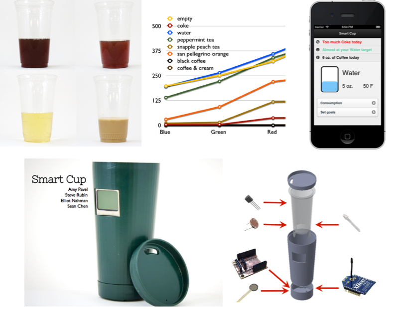

6.S063 Engineering Interactive Technologies (fall 2017)
Open Ended Project (1-2 people)
Deadlines:
midterm presentation: due Wednesday (November XX, 2017) at 11:59pm, upload here
final presentation: due Wednesday (December XX, 2017) at 11:59pm, upload here
Deliverables:
- everything needed to replicate your prototype
- files for 3D printing / laser cutting
- a list of all electronic components you used
- the code that runs your prototype
- a webpage show-casing your prototype (example here) containing:
- a video in which you pitch your prototype
- quality photos of your prototype
- presentation graphics (e.g. a rotoscope)
- log of your weekly progress at the bottom
- December XX: final presentation and live demo in class
- grading criteria are mentioned below after each step
Questions?
- post on piazza
- go to a TA office hour for building/coding oriented questions (tbd)
- go to an instructor office hour for logistical questions and grading (mondays, 4-5pm, 32-211)
- do not send us emails
Task:
We will run this open ended project kickstarter-style: First, you will build an interactive device using 3D printing, custom electronics, and your coding skills, and then pitch it to potential customers (i.e. for starters your fellow students, but who knows). The deliverables for this project are as described above: (1) everything needed to replicate your prototype, and (2) a website showcasing your prototype. Project Requirements:
While we leave most of the project up to you, we have the following requirements:
- must involve custom laser cut, 3D printed, or milled parts
- must involve custom electronics
- must involve custom code and include some data being sent via wifi
- must be interactive, i.e. react to user input
- must be innovative and solve a real-world need (test pitch to your fellow students, do they buy into it?)
Project Example #1: Smart Cup
Smart Cup uses light sensors to identify what the user is currently drinking. Light sensors work because each drink has a different color (coffee is brown while lemonade is yellow). Smart Cup uses this information to give the user a summary of daily intake on the user's mobile phone and helps with healthier drink choices, e.g. by recommending to drink more water and less coffee. The project includes: 3D printed housing, sensors inside and display facing outside, connection to mobile phone via wifi and custom app.
Project Example #2: Flow Shower Add-on

Flow is an add-on for the shower that measures data, such as the current water temperature and the flow rate of the water. Based on this information, Flow can inform the user about the water usage during a specific day and can also alert the user when a certain temperature is reached and the water might become too hot subsequently. The project includes: custom laser cut and 3D printed housing that is watertight, custom sensors, connection to mobile phone via wifi and custom app.
Supplies:
You can reuse the following components from the multi-touch problem set:
- microcontroller
- breadboard
- prototyping cables
- alligator clips
In addition, we will provide you with a selection of sensors.
For everything else you want to use, you might have to get it yourself.
Equipment:
You have access to the following prototyping facilities:
- EDS
- IDC
- Makerspace info on campus
Step 1: Laser cut and bend the casing (25%, due Sept. 20)
- create the .svg file for the acrylic sheet in a 2D drawing program
- outline of touch pad:
- height: XXcm
- tracking area on top: YYcm x ZZcm
- add thin engraved lines at the locations where you will bend your pad
- do not change any of these dimensions since camera image will not be in focus anymore and you will have tracking problems later on
- horizontal line with electrical components:
- place it at 5cm from the bottom (the camera will be glued underneath the LEDs)
- 1 hole for the switch
- 1 hole for the resistor
- 8 holes for the LEDs
- customize your touchpad on the opposite side:
- on the side that does not hold the LEDs, add a custom cut-out or engraving
- this can be anything you like, e.g. your name, an image, the MIT logo, be creative
- outline of touch pad:
- use strip heater or heat gun to bend the acrylic sheet
- warm up equally from both sides to make sure the sheet is thouroughly heated
- use an alignment aid to make sure you get a 90 degree bend
- measurement errors: holes for components are too large / small, wrong height, not enough space for camera etc.
- laser cutter problems: edges are not clear cut or lots of burning marks on the pad etc.
- bending problems: touchpad does not stand stable (bends are not exactly 90 degree), visible heat bubbles at the corners due to overheating during bending etc.